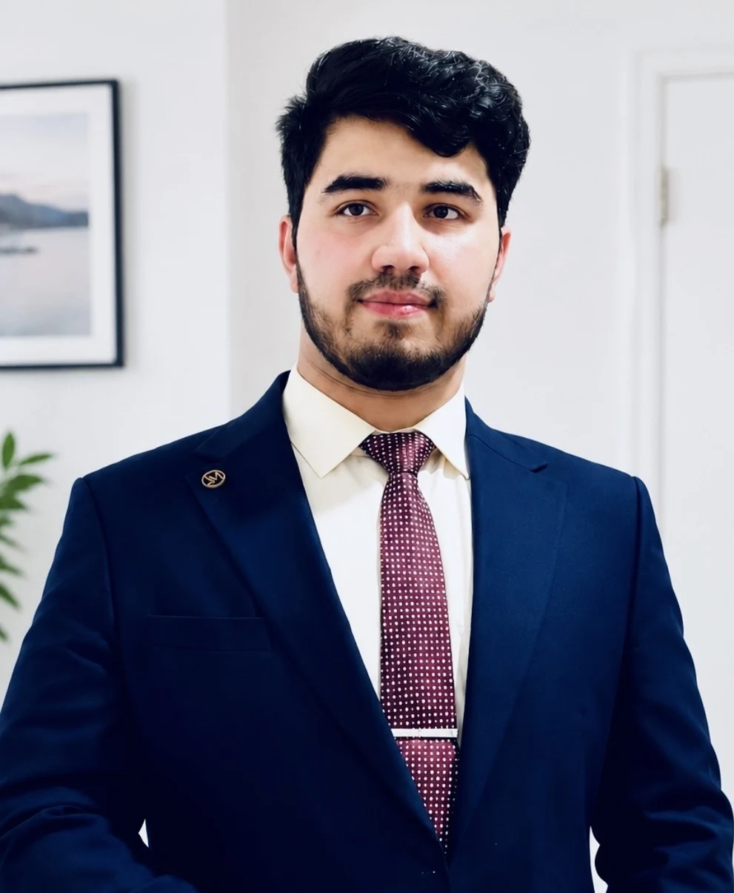

Based in Leiria, Portugal
Haider
Fahim.
Engineer · Entrepreneur · Technology Builder
I’m a developer and entrepreneur based in Leiria, Portugal. I build websites, applications and online businesses, combining technology, creativity and real-world experience to turn ideas into practical projects.

Web & App
Development
E-commerce &
Online Business
AI &
New Technologies
Turning Ideas Into
Real Projects
Who I Am.
Technology is my toolkit.
Building is my mindset.
I’m Haider Fahim, an engineer, developer and entrepreneur from Afghanistan, currently based in Leiria, Portugal.
I enjoy learning, building new ideas and creating practical solutions using technology. My experience includes web and application development, e-commerce and business management.
My goal is to grow my own businesses, work on innovative projects and create a positive impact through technology.
The tools behind
the ideas.
Across the web, mobile applications,
software and connected systems.
From possibility
to project.
A selection of development work and concepts.
Select a project to explore its focus.
DISTRIBUTION & BUSINESS ACTIVITY IN PORTUGAL
GINSENG
ENERGY
Multivitamins Forte Drink
Alongside software, Haider is involved in distribution and business activity in Portugal with GINSENG ENERGY.
What’s inside.
- Caffeine
- 50 mg
- Taurine
- 2000 mg
- Vitamins
- B2, B3, B5, B6, B12 and C
- Korean Red Ginseng extract
- Ginkgo Biloba extract
- Korean Pear juice
- No preservatives or colourings
Product imagery placeholder — an authentic product photograph can be added here.
A journey of learning.
A future of building.
New places, new skills and the ambition
to turn learning into meaningful work.
- 01
Afghanistan
Where the personal story begins.
- 02
Portugal
Building a professional path from Leiria.
- 03
Technology Education
Técnico Especialista em Tecnologias e Programação de Sistemas de Informação
- 04
Software Development
Creating websites, applications and personal software projects.
- 05
E-commerce
Continuing to develop e-commerce and business skills.
- 06
Entrepreneurship
Exploring online business and practical business projects.
- 07
AI & Future Businesses
Exploring new technologies and the possibilities ahead.
Have a Project,
Idea or Business
Opportunity?
I’m open to new opportunities, collaborations and interesting projects.